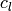

Elastic Constitutive Model¶
The elastic constitutive model is an implementation of isotropic linear elasticity.
User Input¶
Invocation¶
The elastic constitutive model is invoked in the material leg of the input file by
constitutive model elastic
| Name | Aliases |
|---|---|
| elastic | linear elastic, hooke |
Registered Parameters¶
| Symbol | Input Name | Description |
|---|---|---|
 |
LAM | First Lame constant |
 |
G | Elastic shear modulus |
 |
E | Young’s modulus |
| NU | Poisson’s ratio | |
 |
K | Elastic bulk modulus |
 |
H | Constrained modulus |
| KO | SIGy/SIGx in uniaxial strain | |
|  | CL | Longitudinal wave speed |
| CT | shear (transverse) wave speed | |
| C0 | bulk/plastic wave speed | |
 |
CR | Thin rod wave speed |
 |
RHO | Density |
Note
The elastic model uses only the bulk and shear moduli, but any two of the above elastic moduli, or two wave speeds plus the density, can be specified in the input deck, from which the bulk and shear moduli will be computed.
Options¶
| Option | Description |
|---|---|
| fortran | Use the fortran implementation of the plastic model |